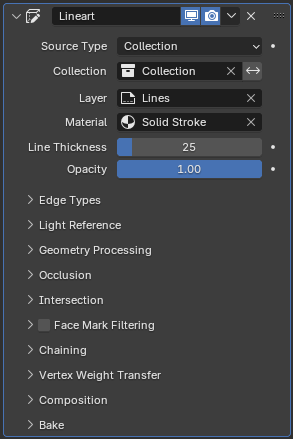
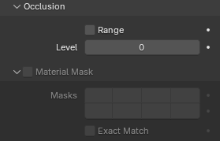
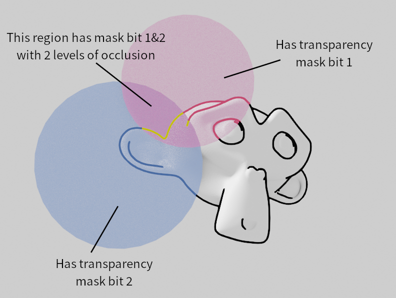
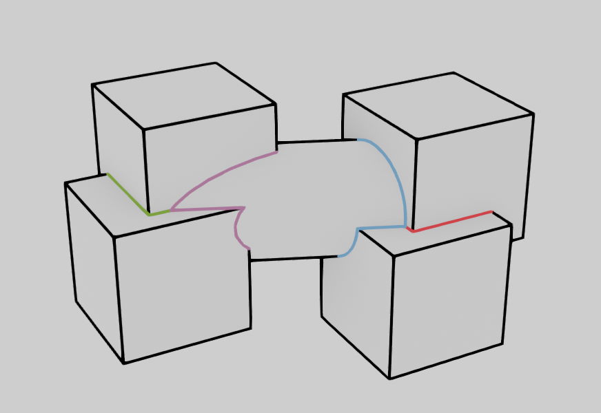
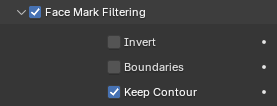
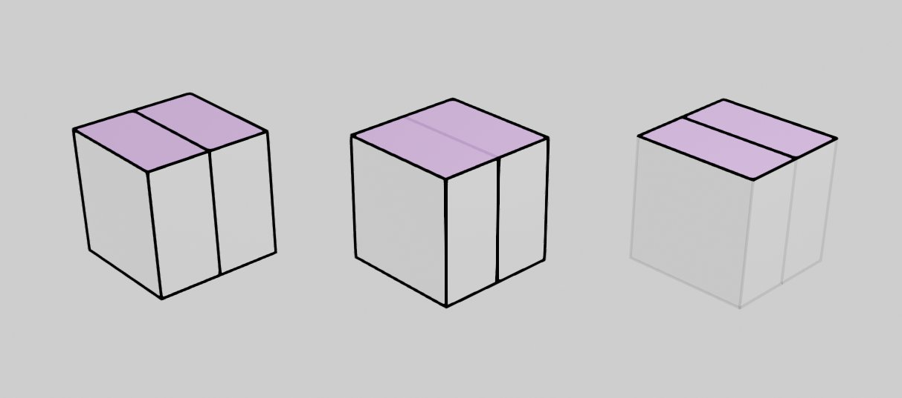
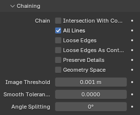
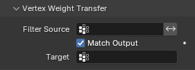
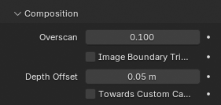
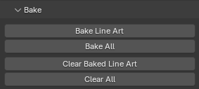

Line Art Modifier¶
Modifier Line Art tạo ra Line Art cách điệu từ một scene, collection hoặc object.
Để hiệu ứng của modifier hiển thị được, scene phải có một active camera. Các đường được tạo ra chỉ được tạo trên những phần của object nhìn thấy được từ camera này.
Ghi chú
Do hiện chưa có cache toàn cục, mỗi modifier Line Art sẽ tự chạy toàn bộ phép tính chắn khuất (occlusion). Vì vậy nếu bạn có nhiều modifier Line Art để chọn các phần khác nhau của scene (để áp các phong cách khác nhau, v.v.), việc tính toán sẽ mất thời gian lâu hơn nhiều. Đã có kế hoạch khắc phục trong tương lai, nhưng đây là một giới hạn đã biết hiện nay.
Tùy chọn¶

Modifier Line Art.¶
- Use Cache
Tối ưu việc render bằng cách dùng dữ liệu scene đã cache từ modifier Line Art đầu tiên trong stack. Tùy chọn này có nhược điểm là một số cài đặt sẽ không còn khả dụng.
Tùy chọn này chỉ khả dụng khi bạn có nhiều hơn một modifier Line Art trong cùng một modifier stack và modifier này không phải là modifier Line Art đầu tiên trong stack.
- Source Type
Xác định nguồn mà Line Art dùng để tạo stroke:
- Object/Collection
Tùy theo loại nguồn, có thể chọn collection hoặc object làm hình học nguồn.
- Invert Collection Filtering
Chọn tất cả trừ các đường từ collection đã chỉ định.
Ghi chú
Line Art vẫn sẽ tải và tính toàn bộ scene hiển thị được để cho kết quả chắn khuất chính xác, trừ khi được chỉ định khác trong thuộc tính Line Art Usage của object hoặc collection.
- Layer
Layer Grease Pencil Layers dùng để đặt kết quả vào.
- Material
Material Grease Pencil Material Grease Pencil dùng để tạo stroke.
- Line Radius
Các stroke do Line Art tạo ra được gán bán kính này.
- Opacity
Các stroke do Line Art tạo ra được gán độ đục (Opacity) này.
- Fill Strokes
Tạo stroke dạng tô đầy thay vì chỉ viền, cho ra các hình đặc dựa trên các vùng được phát hiện.
Edge Types¶
Line Art có thể nhận diện các loại edge khác nhau. Các loại edge được chọn sẽ có trong kết quả.
- Illumination Filtering
Chọn các đường đặc trưng đến từ vùng được chiếu sáng hoặc vùng bóng. Sẽ không ảnh hưởng đến cast shadow và light contour vì chúng nằm ở ranh giới.
- None:
Không lọc bất kỳ đường nào dựa trên vùng chiếu sáng.
- Illuminated:
Chỉ chọn các đường từ vùng được chiếu sáng.
- Shaded:
Chỉ chọn các đường từ vùng bóng.
- Illuminated (Enclosed Shapes):
Chọn các đường từ vùng được chiếu sáng, và kết hợp các đường contour, light contour và shadow thành các hình khép kín.
Create
- Contour
Tạo stroke từ các đường contour. Nơi edge trở thành đường phân tách giữa các face hướng về phía trước/phía sau. Silhouette cũng có thể bị đảo bằng cách nhấp vào nút đảo.
- Contour:
Tạo đường từ contour.
- Silhouette:
Chỉ tạo đường từ silhouette của các object nguồn nhìn như một khối tổng thể.
- Individual Silhouette:
Tạo đường từ silhouette riêng của từng object nguồn.
- Crease
Tạo stroke ở những nơi góc edge đủ nhỏ.
- Crease Threshold
Các góc nhỏ hơn giá trị này sẽ được coi là crease. Độ ưu tiên góc crease: crease override của Line Art trên object > crease mặc định của Line Art.
- Intersections
Tạo stroke ở nơi các đường giao nhau giữa các face.
- Material Borders
Tạo stroke ở nơi edge phân tách các face có material khác nhau.
- Edge Marks
Tạo stroke từ các edge mark kiểu freestyle.
- Loose
Tạo stroke cho các edge không tạo thành Face.
- Light Contour
Tạo các đường phân tách sáng/tối từ một Light Object tham chiếu.
- Cast Shadow
Chiếu các đường contour bằng một object nguồn sáng.
Tùy chọn
- Allow Overlapping Types
Cho phép một edge có nhiều loại chồng lấn lên nhau. Sẽ tạo một stroke riêng cho mỗi loại chồng lấn.
Light Reference¶
- Light Object
Dùng object ánh sáng này để tạo Light Contour.
- Shadow Camera Size
Giá trị này đại diện cho "Orthographic Scale" của một camera ortho. Nếu camera được đặt tại vị trí đèn với scale này, nó sẽ biểu thị vùng phủ của "camera" bóng.
- Near
Khoảng cách clip gần của camera bóng.
- Far
Khoảng cách clip xa của camera bóng.
Geometry Processing¶
- Custom Camera
Dùng camera tùy chỉnh thay vì active camera để tính stroke. Hữu ích khi bake nhiều góc quay khác nhau cũng như cho các hiệu ứng motion graphics.
- Overlapping Edges as Contour
Tùy chọn này cho phép các edge chồng lấn (ví dụ từ một modifier Edge Split hoặc hình học nhập vào nơi hai edge chiếm đúng cùng một không gian) được vẽ như contour. Bật tùy chọn này sẽ làm phép tính chậm đi một chút nhưng sẽ xử lý các trường hợp edge chồng lấn mà không cho kết quả chắn khuất sai.
- Instanced Objects
Tùy chọn này cho phép các particle và object được instance khác được tải vào để tính Line Art. Sẽ có ảnh hưởng đến hiệu năng khi có lượng lớn object instance trong scene.
- Clipping Boundaries
Khi bật, Line Art sẽ tạo các đường clipping thuộc loại contour tại nơi mặt phẳng clip gần hoặc xa cắt qua mô hình. Nếu không sẽ không có đường nào.
- Crease on Smooth
Cho phép các edge crease hiển thị bên trong bề mặt mượt.
- Crease on Sharp
Cho phép các crease hiển thị trên edge sắc.
- Force Backface Culling
Loại bỏ tất cả back face để tăng tốc tính toán. Lưu ý, việc loại bỏ back face sẽ tạo ra các edge ở mức chắn khuất khác so với khi tắt.
Occlusion¶

Panel con Occlusion.¶
- Range
Nếu bật, modifier sẽ chọn các đường có mức chắn khuất nằm giữa giá trị bắt đầu và kết thúc.
- Level
Mức chắn khuất mong muốn được chọn làm kết quả Line Art. Giá trị 0 nghĩa là các đường nhìn thấy được (không bị chắn). Giá trị 1 nghĩa là chọn các đường bị chắn bởi đúng một lớp face.
Material Mask¶
Nếu bật, Line Art sẽ chỉ chọn các đường bị chắn bởi một số face nhất định mà material của chúng có occlusion mask cụ thể được đặt.
- Masks
Để chọn các edge đã bị chắn bởi Material Mask đã chọn.
- Exact Match
Nếu bật, chỉ các đường bị chắn với đúng tổ hợp bit mask đã cho mới được chọn. Nếu không, các đường bị chắn bởi bất kỳ material mask nào trong số các mask đã chỉ định sẽ được chọn.

Minh họa cách dùng material mask.¶
Intersection¶
Cho phép bạn chọn các edge giao nhau giữa hai collection.
- Collection Mask
Các bit mask cần khớp từ thuộc tính Collection Line Art.
- Exact Match
Yêu cầu khớp tất cả intersection mask thay vì chỉ một.

Minh họa cách dùng collection mask.¶
Face Mark Filtering¶

Panel con Face Mark Filtering.¶
Face Mark Filtering có thể được dùng để kiểm soát thủ công những edge đặc trưng nào tạo ra stroke bằng cách dùng face mark của Freestyle.
- Invert
Đảo ngược việc lọc face mark.
- Boundaries
Lọc các đường đặc trưng dựa trên ranh giới face mark.
- Keep Contour
Giữ lại các đường contour trong khi lọc.

Chaining¶

Panel con Chaining.¶
- Chain
- Intersection with Contour
Cho phép các đường giao nhau được nối chuỗi cùng với các đường contour.
Ghi chú
Bật tùy chọn này sẽ dẫn đến sự không rõ ràng trong các loại edge giao nhau. Các đường giao nhau không thể nối chuỗi với bất kỳ đường contour lân cận nào sẽ vẫn giữ là đường giao nhau.
- All Lines
Bật tùy chọn này sẽ khiến tất cả các đường có loại là contour và được nối chuỗi với nhau.
- Loose Edges
Cho phép các Edge lơ lửng không tạo thành face được nối chuỗi với nhau.
- Loose Edges as Contour
Các edge không tạo thành face sẽ được phân loại là đường contour.
- Preserve Details
Thay vì tách tại mỗi thay đổi mức chắn khuất, giữ lại các chi tiết nhỏ từ chuỗi ban đầu. Khi không giữ chi tiết, sẽ tạo ra kết quả mượt hơn nhiều.
- Geometry Space
Dùng khoảng cách hình học để nối chuỗi thay vì dùng không gian ảnh.
- Image Threshold
Cho phép điểm cuối của các đoạn ngắn được nối chuỗi với nhau nếu khoảng cách giữa chúng trong không gian ảnh 2D nằm trong ngưỡng đã chỉ định.
- Smooth Tolerance
Cường độ làm mượt được áp dụng lên các chuỗi răng cưa.
- Angle Splitting
Tách một chuỗi tại các điểm "rẽ" gắt được xác định bởi góc này.
Vertex Weight Transfer¶

Panel con Vertex Weight Transfer.¶
- Filter Source
Nếu mesh nguồn có các vertex group mà tên bắt đầu bằng chữ này, thì thông tin trọng số vertex sẽ được chuyển vào các weight group trong stroke Grease Pencil.
- Match Output
Chuyển các trọng số vertex đã lọc của object vào các weight group Grease Pencil cùng tên với các group đã lọc.
- Target
Nếu Match Output tắt, thì phải chỉ định một vertex group đích. Nếu có nhiều weight group được sao chép vào đích, thì giá trị trọng số cao nhất sẽ được sao chép vào đó.
Composition¶

Panel con Composition.¶
- Overscan
Để tối ưu việc render, Blender chỉ render stroke cho các edge của object nằm trong tầm nhìn của camera. Tuy nhiên, sự tối ưu hóa này có thể khiến stroke kết thúc đột ngột ngay tại mép ảnh.
Giá trị này ngăn lỗi nói trên bằng cách thêm một lề ngoài tầm nhìn của camera để tiếp tục tính stroke.
- Image Boundary Trimming
Cắt tất cả stroke ngay tại ranh giới của ảnh (bao gồm vùng overscan).
- Depth Offset
Dịch stroke nhẹ về phía camera để tránh clipping trong khi vẫn giữ chiều sâu cho viewport. Tùy chọn này không khả dụng trừ khi Show in Front bị tắt.
- Towards Custom Camera
Dịch stroke về phía camera đã chọn (xem Custom Camera ở trên) thay vì active camera.
Bake¶

Các tùy chọn bake.¶
- Bake Line Art
Bake các stroke Line Art cho object Grease Pencil đang active trong dải frame start, end của scene. Sau khi bake, các modifier Line Art đã bake sẽ tự động bị vô hiệu hóa.
- Bake All
Bake tất cả object Grease Pencil có chứa ít nhất một modifier Line Art. Sau khi bake, các modifier Line Art đã bake sẽ tự động bị vô hiệu hóa.
- Clear Baked Line Art
Xóa các frame Line Art đã bake trong dải frame của scene cho object Grease Pencil đang active.
- Clear All
Xóa Line Art đã bake cho tất cả object Grease Pencil có chứa ít nhất một modifier Line Art.
Cảnh báo
Nếu bạn đã vẽ bất cứ thứ gì thủ công trong dải frame mà Line Art chạy, thao tác này cũng sẽ xóa những stroke đó!
- Continue without Clearing
Kích hoạt lại một modifier Line Art cụ thể mà không xóa các stroke đã bake. Điều này hữu ích khi làm việc trên nhiều phần frame riêng biệt.